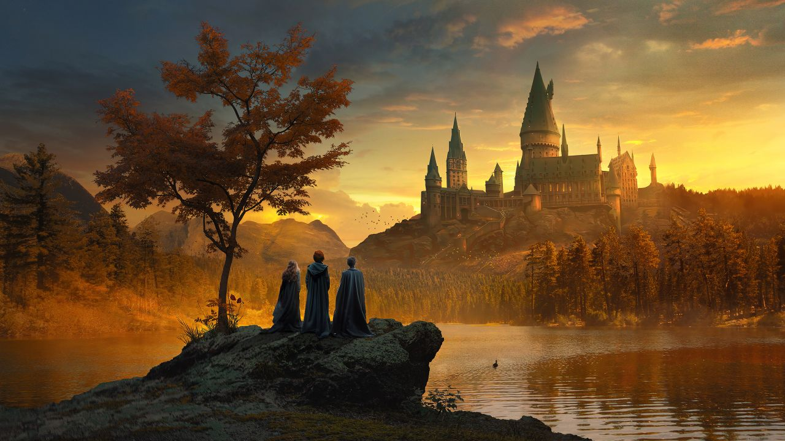

"Um dia acordei, e seria um dia comum sem muitas novidades, mas, após o café uma coisa bateu contra a janela com um leve som. Me levantei, e para minha surpresa havia uma coruja lá fora, com uma carta em seu bico."
Você pega a carta e a abre. Levantando uma sombrancelha em confusão você a lê cuidadosamente. Lá diz que você foi aceito(a) para a Escola de Magia e Bruxaria de Hogwarts.